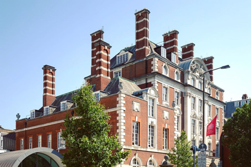
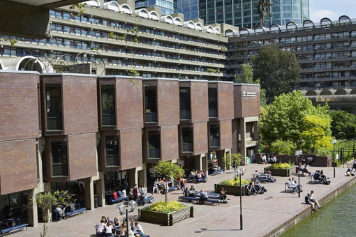
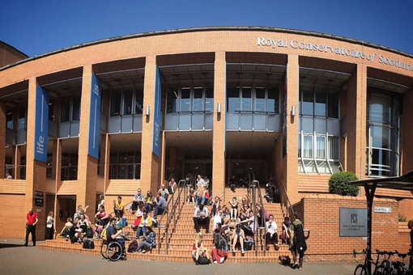

All
作曲
作曲
作曲（Composition）运用基本乐理、和声学、复调、配器法、曲式结构的技术理论体系来表达创作者音乐思想的方法。
各个国家、各个历史时期的创作风格和技术方法各有不同，
大致分为巴洛克时期、古典派、浪漫派、现代派各种风格。
科目设置通常为：作曲，音乐理论，听音训练，民族音乐学，音乐表演和音乐历史，基础键盘技术，作曲指导与研究，古典音乐和浪漫主义音乐的分析，20世纪和21世纪的音乐赏析，当代作曲技术，管弦乐团作曲等等专业课程。
申请要求：需要作品集，提交至少三首原创音乐作品的音/视频和PDF格式的曲谱

伯克利音乐学院（Berklee College of Music）是一所位于美国马萨诸塞州波士顿的独立音乐学院，建校于1945年。
该校于2012年设立了西班牙校区。2015年12月，伯克利音乐学院与波士顿音乐学院（1867年建立）合并，合并后简称为“伯克利”，全称为波士顿伯克利音乐学院。
截至2018年其校友斬獲了多達300座葛萊美獎。
该校约有5,241名学生，是全世界规模最大且最顶尖的独立现代音乐学院，
以美国流行音乐与爵士乐而闻名，学制为四年，并有资格颁发学位。
茱莉亚学院(The Juilliard School)始建于1905年，是世界上最顶尖的专业音乐院校之一，被誉为“音乐界哈佛”，位于美国纽约市林肯中心。
茱莉亚学院是由1905年Dr. Frank Damrosch创建的音乐艺术学院(Institute of Musical Art)，以及1924年Augustus D. Juilliard的托管基金成立的茱莉亚研究生院(Julliard Graduate School)合并而成。

伦敦大学皇家音乐学院
伦敦大学皇家音乐学院（Royal Academy of Music）是英国最古老的音乐学院，由约翰·范（John Fane）和尼古拉斯·查尔斯·博克萨（Nicolas Charles Bochsa）于1822年创立。
1830年，在第一任惠灵顿公爵的支持下，它获得了乔治四世国王颁发的皇家特许状。
它是英国主要的音乐学院之一，在2018年的《QS大学指南》中名列第四，在《卫报大学指南》中名列第三。学院提供乐器表演、作曲、爵士乐、木管乐器、音乐剧和歌剧的本科及研究生培训，并从全世界招募最优秀的学生。

市政厅音乐及戏剧学院
市政厅音乐及戏剧学院（Guildhall School of Music and Drama）是英国伦敦一间独立的音乐及戏剧艺术学院，创立于1880年，坐落在伦敦心脏地带的巴比肯艺术中心（Barbican Centre），是世界上屈指可数的顶尖音乐学府。开设包括音乐、表演、艺术制作（舞台管理、道具、设计实现、戏剧技术）及现场表演的视频设计等方向的本科及研究生学位，该校于1830年被乔治四世国王陛下授与皇家特许状。

苏格兰皇家音乐学院
苏格兰皇家音乐学院（英语：Royal Conservatoire of Scotland，原称：Royal Scottish Academy of Music and Drama，简称RSAMD）是一座位于苏格兰首府格拉斯哥的音乐学院，教授音乐、戏剧及舞蹈。成立于1845年。该校是英国皇家音乐学院联合委员会的成员之一，为苏格兰的国际音乐戏剧学术中心，是苏格兰最佳的表演艺术学院之一，2010年在Cowcaddens附近开设新校区。
英国皇家音乐学院
皇家音乐学院(RCM)是世界上最伟大的音乐学院之一，由当时的威尔士亲王，后来的爱德华七世于1882年创立。在过去135年，学院致力于培养来自世界各地的优秀音乐人才，帮助演奏家、指挥家和作曲家走上国际舞台，开拓个人事业腾飞之路。